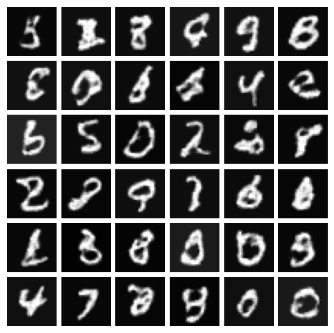
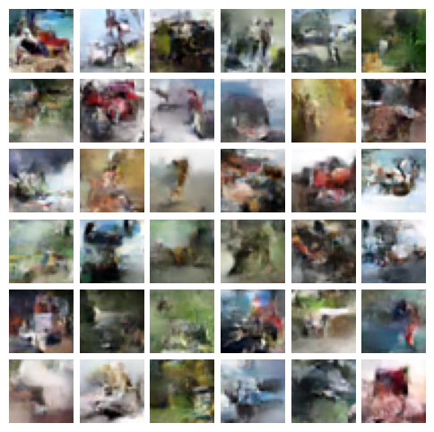

7. GLOW#
Glow is a model proposed by Pugh et al in 2016. The idea is similar to RealNVP. The idea is to use lots of 1X1 convolution to perform the invertible flow. In this ection we implement this paper and test its performance on MNIST and CIFAR10
Show code cell source
import torch
import torch.nn as nn
import matplotlib.pyplot as plt
import numpy as np
import torch.optim as optim
from torchvision import datasets, transforms
from torch.utils.data import DataLoader, Dataset
from torch.distributions import MultivariateNormal
import torch.nn.functional as F
from GLOW import *
transform = transforms.Compose([
transforms.Resize((32, 32)),
transforms.ToTensor()
])
train_dataset = datasets.MNIST(root="data", train=True, transform=transform, download=True)
mnist_train_loader = DataLoader(train_dataset, batch_size=64, shuffle=True)
transform = transforms.Compose([
transforms.Resize((32, 32)),
transforms.ToTensor(),
transforms.Normalize(mean=[0.5, 0.5, 0.5], std=[0.5, 0.5, 0.5])
])
train_dataset = datasets.CIFAR10(root="data", train=True, transform=transform, download=True)
cifar_train_loader = DataLoader(train_dataset, batch_size=64, shuffle=True)
7.1. Simple block implementation#
class SimpleBlock(nn.Module):
def __init__(self, in_channels, out_channels, hidden_channels=512):
super(SimpleBlock, self).__init__()
self.net = nn.Sequential(nn.Conv2d(in_channels, hidden_channels, kernel_size=3, padding=1),
nn.ReLU(),
nn.Conv2d(hidden_channels, hidden_channels, kernel_size=1),
nn.ReLU(),
nn.Conv2d(hidden_channels, out_channels, kernel_size=3, padding=1))
nn.init.normal_(self.net[0].weight, mean=0, std=0.03)
nn.init.normal_(self.net[2].weight, mean=0, std=0.03)
nn.init.zeros_(self.net[-1].weight)
nn.init.zeros_(self.net[-1].bias)
def forward(self, x):
out = self.net(x)
return out
7.2. Flow block implementation#
class ActNorm(nn.Module):
def __init__(self, in_channels, scale=1.0):
super(ActNorm, self).__init__()
self.initialized = False
self.bias = nn.Parameter(torch.zeros(1, in_channels, 1, 1), requires_grad=True)
self.scale = nn.Parameter(torch.zeros(1, in_channels, 1, 1), requires_grad=True)
def initialize(self, x):
with torch.no_grad():
mu = torch.mean(x, dim=[0, 2, 3], keepdim=True)
std = torch.std(x, dim=[0, 2, 3], keepdim=True)
self.bias.data.copy_(-mu.data)
self.scale.data.copy_(1 / (std.data + 1e-6))
self.initialized = True
def forward(self, x):
if not self.initialized:
self.initialize(x)
_, _, height, width = x.shape
log_det = height * width * torch.sum(torch.log(torch.abs((self.scale))))
out = self.scale * (x + self.bias)
return out, log_det
def inverse(self, z):
out = z / self.scale - self.bias
return out
class Invertible1X1Conv(nn.Module):
def __init__(self, channels, bias=True):
super(Invertible1X1Conv, self).__init__()
self.conv_weight = torch.qr(torch.randn(channels, channels))[0]
self.conv_weight = self.conv_weight.unsqueeze(2).unsqueeze(3)
self.conv_weight = nn.Parameter(self.conv_weight, requires_grad=True)
def forward(self, x):
_, _, height, width = x.shape
out = F.conv2d(x, self.conv_weight, bias=None)
log_det = height * width * torch.slogdet(self.conv_weight.squeeze())[1]
return out, log_det
def inverse(self, z):
out = F.conv2d(z, self.conv_weight.squeeze().inverse().unsqueeze(2).unsqueeze(3))
return out
class CouplingLayer(nn.Module):
def __init__(self, in_channels):
super(CouplingLayer, self).__init__()
self.st_net = SimpleBlock(in_channels // 2, in_channels)
self.scale = nn.Parameter(torch.ones(1, in_channels // 2, 1, 1))
def forward(self, x):
x_a, x_b = torch.chunk(x, 2, dim=1)
st = self.st_net(x_a)
s, t = torch.chunk(st, 2, dim=1)
s = self.scale * torch.tanh(s)
y_b = t + s.exp() * x_b
out = torch.cat([x_a, y_b], dim=1)
log_det = torch.sum(s.view(x.shape[0], -1), dim=1).mean()
return out, log_det
def inverse(self, z):
z_a, z_b = torch.chunk(z, 2, dim=1)
st = self.st_net(z_a)
s, t = torch.chunk(st, 2, dim=1)
s = self.scale * torch.tanh(s)
x_b = (z_b - t) * (-s).exp()
out = torch.cat([z_a, x_b], dim=1)
return out
7.3. Implementation of Glow block#
class GlowBlock(nn.Module):
def __init__(self, in_channels, n_layers, device="cpu"):
super(GlowBlock, self).__init__()
self.net = []
for i in range(n_layers):
self.net.extend([ActNorm(in_channels), Invertible1X1Conv(in_channels), CouplingLayer(in_channels)])
self.net = nn.ModuleList(self.net)
self.device = device
def forward(self, x):
log_det = torch.zeros(1).to(self.device)
for layer in self.net:
x, d = layer(x)
log_det += d
return x, log_det
def inverse(self, z):
for layer in self.net[::-1]:
z = layer.inverse(z)
return z
7.4. Implementation of glow net#
class GLOW(nn.Module):
def __init__(self, in_channels, height=32, width=32, n_layers=8, n_blocks=3, device="cpu"):
super(GLOW, self).__init__()
self.net = []
for i in range(n_blocks):
self.net.append(GlowBlock(in_channels*2**(i+2), n_layers, device=device))
self.net = nn.ModuleList(self.net)
self.n_blocks = n_blocks
self.in_channels = in_channels
self.height = height
self.width = width
self.device = device
def forward(self, x):
log_det = torch.zeros(1).to(self.device)
z_list = []
for i, block in enumerate(self.net):
x = self.squeeze(x)
x, d = block(x)
log_det += d
if i != self.n_blocks - 1:
x, z = torch.chunk(x, 2, dim=1)
else:
z = x
z_list.append(z.view(x.shape[0], -1))
z = torch.cat(z_list, dim=1)
return z, log_det
def sample(self, n_samples):
idx, n = 0, len(self.net)
vol = self.in_channels * self.height * self.width
z = MultivariateNormal(torch.zeros(vol), torch.eye(vol)).sample((n_samples,))
z = z.to(self.device)
z = torch.flip(z, dims=[1])
for block in reversed(self.net):
if n == len(self.net):
z_in = z[:, idx: idx+vol//(2**(n-1))]
z_in = z_in.reshape(z_in.shape[0], 2**(n+1)*self.in_channels, self.height//(2**n), self.width//(2**n))
x = block.inverse(z_in)
x = self.unsqueeze(x)
idx += vol//(2**(n-1))
else:
z_in = z[:, idx: idx+vol//(2**n)]
z_in = z_in.reshape(z_in.shape[0], 2**n*self.in_channels, self.height//2**n, self.width//2**n)
z_in = torch.cat([x, z_in], dim=1)
x = block.inverse(z_in)
x = self.unsqueeze(x)
idx += vol//(2**n)
n -= 1
return x
def squeeze(self, x):
B, C, H, W = x.shape
x = x.view(B, C, H // 2, 2, W // 2, 2)
x = x.permute(0, 1, 3, 5, 2, 4).contiguous()
x = x.view(B, C * 2 * 2, H // 2, W // 2)
return x
def unsqueeze(self, x):
B, C, H, W = x.shape
x = x.view(B, C // 4, 2, 2, H, W)
x = x.permute(0, 1, 4, 2, 5, 3).contiguous()
x = x.view(B, C // 4, H * 2, W * 2)
return x
7.5. GLOW on MNIST#
def loss_fn(z, log_det):
nll = (0.5 * z ** 2).sum(-1) + 512 * np.log(2 * np.pi)
loss = nll - log_det
return loss.mean()
glow = GLOW(in_channels=1, device=DEVICE).to(DEVICE)
optimizer = optim.Adam(glow.parameters(), lr=1e-3)
train(glow, optimizer, mnist_train_loader, n_epochs=30, device=DEVICE, sample=True)
Show code cell source
plot_samples(glow, 36, device=DEVICE)

7.6. GLOW on CIFAR10#
glow = GLOW(in_channels=3, device=DEVICE).to(DEVICE)
optimizer = optim.Adam(glow.parameters(), lr=1e-3)
train(glow, optimizer, cifar_train_loader, n_epochs=30, device=DEVICE, sample=True)
Show code cell source
plot_samples(glow, 36, device=DEVICE)
